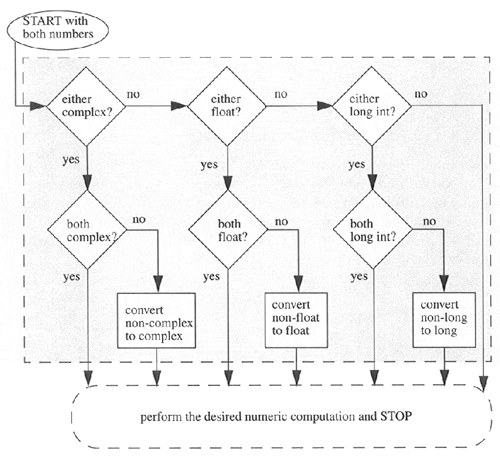
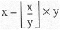
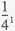

| < BACK | Make Note | Bookmark | CONTINUE > |
Operators
Numeric types support a wide variety of operators, ranging from the standard type of operators to operators created specifically for numbers, and even some which apply to integer types only.
Mixed-Mode Operations
It may be hard to remember, but when you added a pair of numbers in the past, what was important was that you got your numbers correct. Addition using the plus ( + ) sign was always the same. In programming languages, this may not be as straightforward because there are different types of numbers.
When you add a pair of integers, the + represents integer addition, and when you add a pair of floating point numbers, the + represents double-precision floating point addition, and so on. Our little description extends even to non-numeric types in Python. For example, the + operator for strings represents concatenation, not addition, but it uses the same operator! The point is that for each data type that supports the + operator, there are different pieces of functionality to "make it all work," embodying the concept of overloading.
Now, we cannot add a number and a string, but Python does support mixed mode operations strictly between numeric types. When adding an integer and a float, a choice has to be made as to whether integer or floating point addition is used. There is no hybrid operation. Python solves this problem using something called numeric coercion. This is the process whereby one of the operands is converted to the same type as the other before the operation. Python perform's numeric coercion by following some rules:
To begin with, if both numbers are the same type, no conversion is necessary. When both types are different, a search takes place to see whether one number can be converted to the other's type. If so, the operation occurs and both numbers are returned, one having been converted. There are rules that must be followed since certain conversions are impossible, such as turning a float into an integer, or converting a complex number to any non-complex number type.
Coercions which are possible, however, include turning an integer into a float (just add " .0 ") or converting any non-complex type to a complex number (just add a zero imaginary component, i.e., " 0j "). The rules of coercion follow from these two examples: integers move towards float, and all move toward complex. The Python Reference Guide describes the coerce() operation in the following manner:
-
If either argument is a complex number, the other is converted to complex;
-
Otherwise, if either argument is a floating point number, the other is converted to floating point;
-
Otherwise, if either argument is a long integer, the other is converted to long integer;
-
Otherwise, both must be plain integers and no conversion is necessary (in the upcoming diagram, this describes the rightmost arrow).
The following flowchart illustrates these coercion rules:
Figure 5.1. Numeric coercion.
Automatic numeric coercion makes life easier for the programmer since he or she does not have to worry about adding coercion code to his or her application. If explicit coercion is desired, Python does provide the coerce() built-in function (described later in Section 5.6.2).
If there is any bad news about coercion and mixed-mode operations, it is that no coercion is performed during an operation. For example, if you multiply two integers together forming a result that is too large for an integer, no conversion to a long takes place, and your operation will fail:
>>> 999999 * 999999 Traceback (innermost last): File "<stdin>", line 1, in ? OverflowError: integer multiplication
A workaround to such a situation is to try to detect if such problems may occur, and if so, perform a manual conversion of both integers to longs by using the long() built-in function before the operation.
Below is an example showing you Python's automatic coercion. The 2 is converted to a long before the operation.
>>> 999999L ** 2. 99999B000001L
Standard Type Operators
The standard type operators discussed in the previous chapter all work as advertised for numeric types. Mixed-mode operations, described above, are those which involve two numbers of different types. The values are internally converted to the same type before the operation is applied.
Here are some examples of the standard type operators in action with numbers:
>>> 5.2 == 5.2 1 >>> -719 >= 833 0 >>> 5+4e >= 2-3e 1 >>> 2 < 5 < 9 # same as ( 2 < 5 ) and ( 5 < 9 ) 1 >>> 77 > 66 == 66 # same as ( 77 > 66 ) and ( 66 == 66 ) 1 >>> 0. < -90.4 < 55.3e2 != 3 < 181 0 >>> (-1 < 1) or (1 < -1) 1
Numeric Type (Arithmetic) Operators
Python supports unary operators for no change and negation, + and -, respectively; and binary arithmetic operators +, -, *, /, %, and **, for addition, subtraction, multiplication, division, modulo, and exponentiation, respectively.
Rules and exceptions: Any zero right-hand argument for division and modulo will result in a ZeroDivisionError exception. Integer modulo is straightforward integer division remainder, while for float, take the difference of the dividend and the product of the divisor and the quotient of the quantity dividend divided by the divisor rounded down to the closest integer, i.e., x - (math.floor(x/y) * y, or
For complex number modulo, take only the real component of the division result, i.e., x - (math.floor((x/y).real) * y).
The exponentiation operator has a peculiar precedence rule in its relationship with the unary operators: It binds more tightly than unary operators to its left, but less tightly than unary operators to its right. Due to this characteristic, you will find the ** operator twice in the numeric operator charts in this text. Here are some examples:
>>> 3 ** 2 9 >>> -3 ** 2 # ** binds together than - to its left -9 >>> (-3) ** 2 # group to cause - to bind first 9>>> 4.0 ** -1.0 # ** binds looser than - to its right 0.25
In the second case, it performs 3 to the power of 2 (3-squared) before it applies the unary negation. We need to use the parentheses around the "-3" to prevent this from happening. In the final example, we see that the unary operator binds more tightly because the operation is 1 over quantity 4 to the first power  or ¼. Note that 1/4 as an integer operation results in an integer 0, so integers are not allowed to be raised to a negative power (it is a floating point operation anyway), as we will show here:
>>> 4 ** -1 Traceback (innermost last): File "<stdin>", line 1, in ? ValueError: integer to the negative power
A summary of all arithmetic operators, in shaded hierarchical order from highest-to-lowest priority is found Table 5.2. All the operators listed here rank higher in priority than the bitwise operators for integers, found in Section 5.5.4.
|
arithmetic operator |
function |
|---|---|
|
expr1 ** expr2 |
expr1 raised to the power of expr2 [a] |
|
+ expr |
(unary) expr sign unchanged |
|
- expr |
(unary) negation of expr |
|
expr1 ** expr2 |
exp1 raised to the power of expr2 [a] |
|
expr1 * expr2 |
expr1 times expr2 |
|
expr1 / expr2 |
expr1 divided by expr2 |
|
expr1 % expr2 |
expr1 modulo expr2 |
|
expr1 + expr2 |
expr1 plus expr2 |
|
expr1 - expr2 |
expr1 minus expr2 |
[a] blinds tighter than unary operators to its left and looser than unary operators to its right
Be aware that integer division truncates. To obtain the correct fractional result, use floating point numbers instead:
>>> 3 / 4 0 >>> 3.0 / 4.0 0.75
Here are a few more examples of Python's numeric operators.
>>> -442 - 77 -519 >>> >>> 4 ** 3 64 >>> >>> 4.2 ** 3.2 98.7183139527 >>> 8 / 3 2 >>> 8.0 / 3.0 2.66666666667 >>> 8 % 3 2 >>> (60. - 32.) * ( 5. / 9. ) 15.5555555556 >>> 14 * 0x04 56 >>> 0170 / 4 30 >>> 0x80 + 0777 639 >>> 45L * 22L 990L >>> 16399L + 0xA94E8L 709879L >>> -2147483648L - 52147483648L -54294967296L >>> 64.375+1j + 4.23-8.5j (68.605-7.5j) >>> 0+1j ** 2 # same as 0+(lj**2) (-1+0j) >>> 1+1j ** 2 # same as 1+(lj**2) 0j >>> (1+1j) ** 2 2j
Note how the exponentiation operator is still higher in priority than the binding addition operator that delimits the real and imaginary components of a complex number. Regarding the last two examples above, we grouped the components of the complex number together to obtain the desired result.
*Bit Operators (Integer-only)
Python integers may be manipulated bitwise and the standard bit operations are supported: inversion, bitwise AND, OR, and exclusive OR (a.k.a. XOR), and left and right shifting. Here are some facts regarding the bit operators:
-
Negative numbers are treated as their 2's complement value.
-
Left and right shifts of N bits are equivalent to multiplication and division by (2 ** N) without overflow checking.
-
For long integers, the bit operators use a "modified" form of 2's complement, acting as if the sign bit were extended infinitely to the left.
The bit inversion operator ( ~ ) has the same precedence as the arithmetic unary operators, the highest of all bit operators. The bit shift operators ( << and >> ) come next, having a precedence one level below that of the standard plus and minus operators, and finally we have the bitwise AND, XOR, and OR operators (&, ^, | ), respectively. All of the bitwise operators are presented in the order of descending priority in Table 5.3.
|
bitwise operator |
function |
|---|---|
|
~ num |
(unary) invert the bits of num, yielding -( num + 1) |
|
num1 << num2 |
expr1 left shifted by expr2 bits |
|
num1 >> num2 |
expr1 right shifted by expr2 bits |
|
num1 & num2 |
expr1 bitwise AND with expr2 |
|
num1 ^ num2 |
expr1 bitwise XOR (exclusive OR) with expr2 |
|
num1 | num2 |
expr1 bitwise OR with expr2 |
We will now present some examples using the bit operators using 30 (011110), 45 (101101), and 60 (111100):
>>> 30 & 45 12 >>> 30 | 45 63 >>> 45 & 60 44 >>> 45 | 60 61 >>> ~30 -31 >>> ~45 -46 >>> 45 << 1 90 >>> 60 >> 2 15 >>> 30 ^ 45 51
| Last updated on 9/14/2001 Core Python Programming, © 2002 Prentice Hall PTR |
| < BACK | Make Note | Bookmark | CONTINUE > |